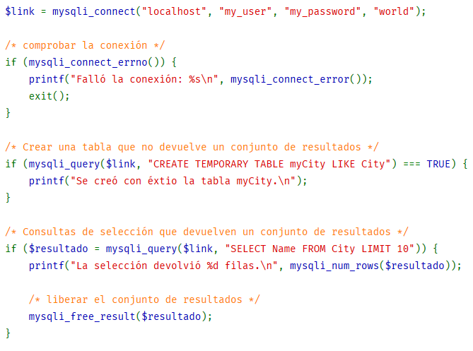

Objetivo de la sección
Ver con un ejemplo los pasos a seguir para realizar una consulta de un registro a una tabla dentro de una base de datos MySQL.
Procedimiento para llevar a cabo una consulta
a una base de datos mysql con php
Para poder hacer una consulta a alguna tabla de la base de datos es importante primero haber creado la conexión ya que la variable que contiene esta, la utilizaremos durante el SELECT además usaremos el método ‘mysqli_query’ el cual requiere dos parámetros, primero la conexión creada anteriormente y luego la sentencia SQL de selección, si lo hacemos correctamente este método nos retorna un objeto de tipo ‘mysqli_result’ el cual debemos guardar en una variable y con esta acceder a los resultados devueltos por la petición mediante otros métodos, es importante liberar el resultado antes de usarlo en otra petición como se muestra en la imagen, además igual cerrar la conexión al terminar de usarla para devolverle recursos al servidor.
Manual de PHP.(2017).Ejemplos básicos de la extención MySQLi.[Figura].Recuperado de:
http://php.net/manual/es/mysqli.examples-basic.php
Si la conexión con la BBDD esta correctamente creada y seguimos a cabalidad los pasos mencionados en esta sección podremos
acceder a la información de cualquier tabla que tengamos creada en nuestra base de datos MySQL.
Además, es importante resaltar que debemos usar las extensiones MySQLi o PDO_MySQL para realizar estos procedimientos,
ya que la extensión Mysql aunque todavía exista fue declarada obsoleta(deprecated) en la versión 5.5.0 de PHP y eliminada en la 7.0.0.